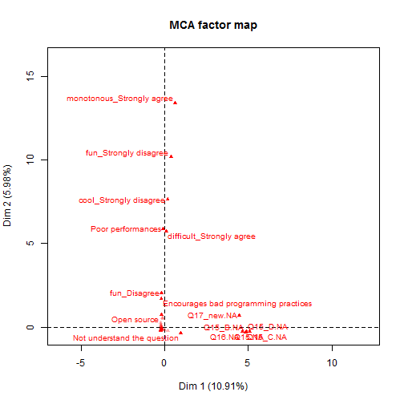
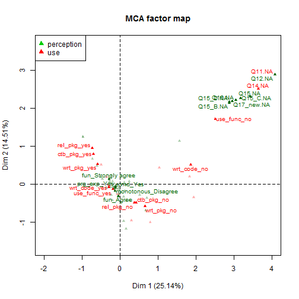

useR! 2016 participants and R programming: a multivariate analysis
Introduction
Background
The useR! survey gathers responses to questions on different themes for 455 attendees: demographic characteristics, R programming and involvement in the R community. The separate analyses of each question in each theme are detailed in the posts Mapping useRs, useRs Relationship with R and Community Involvement of useRs. Here, we aim at understanding attendees’ joint responses to the questions of the survey for a given theme. In other words, we would like to highlight the relationships between their answers, as well as to highlight the similarities between the respondents. Multiple correspondence analysis (MCA) is a dimensionality reduction method which allows to explore and visualize a set of categorical variables. It can be seen as the counterpart of PCA for categorical data. The aim of this document is to go beyond univariate analyses and to present the results of a multivariate analyses of the R programming questions using MCA. A corresponding analysis of the R community questions is detailed in a companion report.
Questions
We base our study on the following questions:
Demography
- Q1 What did you register as at useR! 2016?
- Q2 What is your gender?
- Q3 In what year were you born?
- Q4 To what racial or ethnic group(s) do you identify?
- Q5 In what country do you currently reside?
- Q6 Do you identify as LGBT (Lesbian, Gay, Bisexual, Asexual and/or Transgender)?
- Q7 What is the highest level of education you have completed?
- Q8 What is your current (primary) employment status?
- Q9 Is your current job full-time or part-time?
- Q10 Are you a caregiver for children or adult dependents on a regular basis?
R programming
- Q11 How long have you been using R for?
- Q12 Did you have previous programming experience before beginning to use R?
- Q13 Which of the following do you do? Tick any that apply among
- Q13A I use functions from existing R packages to analyze data
- Q13B I write R code designed to make my work easier, such as loops or conditionals or functions
- Q13C I write R functions for use by myself or my collaborators
- Q13D I contribute to R packages (on CRAN or elsewhere)
- Q13E I have written my own R package
- Q13F I have written my own R package and released it on CRAN or Bioconductor (or shared it on GitHub, R-Forge or similar platforms)
- Q14 Do you use R as a recreational activity, primarily as part of a job or both?
- Q15 How much do you agree or disagree with the following statements?
- Q15A Writing R is fun
- Q15B Writing R is considered cool or interesting by my peers?
- Q15C Writing R is a monotonous task
- Q15D Writing R is difficult
- Q16 Would you recommend R to friends or colleagues as a programming language to learn?
- Q17 What would be your number one argument for/against learning R?
Questions Q1-Q10 focus on the demographic characteristics of the respondents while questions Q11, Q13 and Q14 are related to the use of R, and questions Q15 to Q17 to the perception of R. Note that Q12 is about programming in general and not specifically dedicated to R.
We first focus on the topic “uses of R” and we will consider the perception questions in a second step. The demographic questions are also used in the analysis in order to help in the interpretation and to describe the profile of R programming answers.
Coding
Questions Q1, Q5 and Q17 have a category of answer Other (please specify). The “free” answers have been gathered in different categories and included as new categories in the questions. The new variables (with more levels) are named Q1_new, Q5_new and Q17_new. In addition, some categories name have been modified to make them easily understandable.
Note that questions Q13_A to Q13_F are answered by ticking one box indicating that the respondent agrees with the category. Consequently, if a box is unchecked, it is impossible to know if they disagree or if they don’t answer the question. Such responses are recoded as yes if the box is checked and recoded as no otherwise.
Analysis of the uses of R
The following graphic summarizes relationships between the answers to the “uses of R” questions. To interpret the main dimensions of variability in the response profiles, we base our analysis on the proximities between categories. Two categories are close on the graph when individuals who have selected the first category also tend to take the other category.

Proximities between categories Q11.NA and Q14.NA indicate that people who did not answer Q11 (How long have you been using R for?) often did not answer Q14 (Do you use R as a recreational activity, primarily as part of a job or both?). However, it only concerns 16 individuals.
We can see on the graph a gradient which shows the relationship between the question Q11 related to the experience in R programming and the question Q13 related to the use of R, with people on the right, who have recently started using R, and people on the left, who have used R for a long time. In particular, the users with more than 10 years’ experience have already written their own package or contributed to packages, while people with less than 2 years’ experience haven’t. The gradient can be clearly interpreted and shows the progression in gaining new skills.
The beginners in R seem to be trying R during their free time. This is less true for experienced users who have probably gained their experience during their job. Note that beginners in R are very few among respondents (9 people with less than 6 months’ experience).
The graph of the individuals allows identification of the individuals located at the top right who do not answer some questions. These individuals did not answer any of the questions related to their use of R but answered the demographic questions. Interestingly, one of them indicated they just discovered R (in the text answer Q25). This explanation could also be valid for the other ones, explaining why they agree to participate to the study, yet only answer a few questions. This comment is in line with the previous graph, in which categories NA are on the right, which is the location of inexperienced users.
Analysis of the perception of the R programming language

The analysis of questions related to the perception of the R language (Q15, Q16, Q17) shows again that attendees who did not answer one question often did not answer others (1st dimension). More interestingly, the second dimension of the graph highlights that people thinking very strongly that R is monotonous also think that it is not fun, not cool, or even think R is poor. It highlights that among respondents there is a sub-population of people who do not appreciate R. However, it concerns around 10 individuals.
Interestingly, these respondents tend to recommend R to a friend as a programming language to learn, so that they recognize some interest.
Perception and uses of R
Does the perception of the R language differ according to the experience of the user? To answer this question, the perception variables are projected as supplementary variables on the graph obtained with the “uses of R” variables. Supplementary variables are not used to build the dimensions of variability, they are projected a posteriori and help for the interpretation.

We note that experienced users particularly appreciate R. They find that R is fun, not monotonous and they recommend to use it.
Relationship with demographic

Demographic variables are also projected as supplementary variables. We excluded the ethnic group variable (Q4) and the country of residence variable (Q5) because of the large number of infrequent categories. The graph above shows that the demographic characteristics are significantly related to the user profiles. An analysis of variance with demographic variables as covariates, and the coordinates of the individuals on the dimensions as explanatory variables, has been performed1. The graph shows that people with a doctorate are more highly represented among advanced users. This also shows that men are more highly represented than women among the most advanced users. As stated in the post useRs Relationship with R, it could be explained by the fact that women tend to be younger, but here we note that the variable Age does not significantly explain the coordinates of the individuals on the graph. To get more insight into this possible confounding effect, we created a variable sex-age and represent it. The plot confirms that men are over-represented amongst the advanced users.


Similarities between respondents
The participants are clustered according to their answers to the uses of R questions only (Q11, Q13, Q14). To do this, a hierarchical clustering is performed on K principal components of the MCA. The rationale is to improve the stability of the clustering by building it from denoised data.
Several rules can be used to select the number of components used for the clustering. Here we choose 12 dimensions which corresponds to 95% of the projected inertia (variance) of the data.

The number of clusters is chosen according to the barplot of the inertia gains2 which suggests 3 clusters.
However, since a cluster with non-respondents is expected, we consider 4 clusters to have a more interpretable clustering.

The first cluster located on the left represent the experienced users while the second cluster gathers the intermediate users and the third one the beginners. The fourth cluster is constituted with people who did not answer.
The size of each cluster is as follows:
| 1 | 2 | 3 | 4 | |
|---|---|---|---|---|
| size | 171 | 260 | 11 | 13 |
i.e. in terms of proportions:
| 1 | 2 | 3 | 4 | |
|---|---|---|---|---|
| proportion | 0.38 | 0.57 | 0.02 | 0.03 |
We now interpret the clusters.
Cluster 1
To help us describing the first cluster, we use statistical tests to compare the proportion of each category in the cluster versus the proportion in the population of the respondents. Of course, for variables that have been used to build the clusters (Q11, Q13, Q14), this test is only indicative, but for others (demographic questions or perception questions), the p.values can be interpreted.
| Cla/Mod | Mod/Cla | Global | p.value | |
|---|---|---|---|---|
| Q13_F=rel_pkg_yes | 96.77 | 87.72 | 34.07 | < 2e-16 |
| Q13_D=ctb_pkg_yes | 88.37 | 88.89 | 37.80 | < 2e-16 |
| Q13_E=wrt_pkg_yes | 71.85 | 100.00 | 52.31 | < 2e-16 |
| Q13_C=wrt_func_yes | 42.93 | 97.66 | 85.49 | 3.5e-10 |
| Q13_B=wrt_code_yes | 42.35 | 97.08 | 86.15 | 1.4e-08 |
| Q2=Men | 46.64 | 77.19 | 62.20 | 2.2e-07 |
| Q7=Doctorate | 50.75 | 59.06 | 43.74 | 3.5e-07 |
| Q11=> 10 years | 57.14 | 39.77 | 26.15 | 4.6e-07 |
| Q15=fun_Strongly agree | 49.54 | 62.57 | 47.47 | 5.7e-07 |
| Q14=For both recreational and job/educational purposes. | 52.50 | 49.12 | 35.16 | 1.7e-06 |
| Q1_new=Q1_new_Academic/Govt | 46.81 | 51.46 | 41.32 | 0.00071 |
| Q8=Q8_Employed non-permanently in academia | 57.63 | 19.88 | 12.97 | 0.00089 |
| Q8=Q8_Employed permanently in academia | 53.95 | 23.98 | 16.70 | 0.00157 |
The table can be interpreted as follows:
- first row indicates that 96.77% of individuals that have released their own R package are in cluster 1; 87.72% of individuals in this cluster have released their own R package, and 34.07% of individuals in the population have released their own R package.
- row 7 indicates that 50.75% of individuals with a doctorate are in this cluster; 59.06% of individuals in this cluster have a doctorate, and 43.74% of individuals in the population have a doctorate. We can reject at risk 3.47e-07 the null hypothesis the proportion of respondents with a doctorate in the first cluster is the same than the proportion in the population of the respondents. This first table only represents the results when the proportion in the cluster is larger than the proportion in the population.
To wrap-up, the tests results confirm that cluster 1 gathers experienced users. In this cluster, there is an over-representation of people with a doctorate, men, or people employed in academia. It is also a cluster where the proportion of people strongly seeing R programming as fun is large. In the same line, people in cluster 1 are more likely to use R for both recreational and job/educational purposes.
This second table represents the categories that are underrepresented in cluster 1.
| Cla/Mod | Mod/Cla | Global | p.value | |
|---|---|---|---|---|
| Q13_F=rel_pkg_no | 7.00 | 12.28 | 65.93 | < 2e-16 |
| Q13_D=ctb_pkg_no | 6.71 | 11.11 | 62.20 | < 2e-16 |
| Q13_E=wrt_pkg_no | 0.00 | 0.00 | 47.69 | < 2e-16 |
| Q13_C=wrt_func_no | 6.06 | 2.34 | 14.51 | 3.5e-10 |
| Q13_B=wrt_code_no | 7.94 | 2.92 | 13.85 | 1.4e-08 |
| Q11=6-12 months | 0.00 | 0.00 | 6.37 | 6.6e-07 |
| Q2=Women | 23.08 | 22.81 | 37.14 | 6.6e-07 |
| Q1_new=Q1_new_Industry | 26.46 | 29.24 | 41.54 | 3.3e-05 |
| Q8=Q8_Employed in industry | 26.23 | 28.07 | 40.22 | 3.7e-05 |
| Q14=Q14.NA | 0.00 | 0.00 | 3.52 | 0.00045 |
| Q11=1-2 years | 11.43 | 2.34 | 7.69 | 0.00046 |
| Q7=Masters degree | 28.34 | 30.99 | 41.10 | 0.00065 |
| Q14=Primarily as part of a job or educational course; | 31.64 | 50.88 | 60.44 | 0.00131 |
| Q11=Q11.NA | 0.00 | 0.00 | 2.86 | 0.00196 |
| Q5=United States | 32.91 | 60.82 | 69.45 | 0.00217 |
US people are under-represented in cluster 1. We can imagine that only people deeply using R are motivated to go to the US for such a conference due to the costs.
Cluster 2
Cluster 2 can be described as a cluster of intermediate users who use R since 1-2 years or less, but more than 6 months. They use R functions, but don’t write their own functions or packages. They appreciate R, but use it primarily for their job. They are more employed in the industry. This cluster gathers more women, more undergraduate and master and people from the US.
| Cla/Mod | Mod/Cla | Global | p.value | |
|---|---|---|---|---|
| Q13_F=rel_pkg_no | 85.33 | 98.46 | 65.93 | < 2e-16 |
| Q13_D=ctb_pkg_no | 85.51 | 93.08 | 62.20 | < 2e-16 |
| Q13_E=wrt_pkg_no | 89.86 | 75.00 | 47.69 | < 2e-16 |
| Q11=6-12 months | 100.00 | 11.15 | 6.37 | 4.4e-08 |
| Q14=Primarily as part of a job or educational course; | 66.91 | 70.77 | 60.44 | 2.2e-07 |
| Q2=Women | 71.60 | 46.54 | 37.14 | 1.4e-06 |
| Q11=1-2 years | 88.57 | 11.92 | 7.69 | 4.0e-05 |
| Q8=Q8_Employed in industry | 67.76 | 47.69 | 40.22 | 0.00017 |
| Q1_new=Q1_new_Industry | 67.20 | 48.85 | 41.54 | 0.00026 |
| Q15=fun_Agree | 67.20 | 48.08 | 40.88 | 0.00031 |
| Q7=Masters degree | 66.31 | 47.69 | 41.10 | 0.00096 |
| Q2Q3=20-28_Women | 79.07 | 13.08 | 9.45 | 0.00185 |
| Q16=rcmd_Yes | 59.09 | 95.00 | 91.87 | 0.00558 |
| Q2Q3=29-33_Women | 75.56 | 13.08 | 9.89 | 0.00786 |
| Q5=United States | 61.08 | 74.23 | 69.45 | 0.01118 |
| Q13=use_func_yes | 58.63 | 95.38 | 92.97 | 0.02258 |
| Q7=Undergraduate degree | 71.15 | 14.23 | 11.43 | 0.02953 |
| Q15_D=difficult_Disagree | 62.56 | 50.77 | 46.37 | 0.03045 |
| Q2Q3=>58_Men | 80.00 | 6.15 | 4.40 | 0.03401 |
| Q10=Caryng_resp_No | 60.18 | 76.15 | 72.31 | 0.03569 |
Cluster 3
Cluster 3 gathers respondents with less than 6 months of experience in R. They do not have an opinion about the “fun” or “monotonous” nature of R. They use R in their free time and find that the main advantage of R is that it is an open source software. This cluster gather curious users discovering R in their free time. No demographic characteristics show-up in this group.
| Cla/Mod | Mod/Cla | Global | p.value | |
|---|---|---|---|---|
| Q11=< 6 months | 100.00 | 81.82 | 1.98 | < 2e-16 |
| Q14=Primarily as a recreational activity, in your free time; | 100.00 | 36.36 | 0.88 | 1.9e-07 |
| Q13_C=wrt_func_no | 12.12 | 72.73 | 14.51 | 1.6e-05 |
| Q13_B=wrt_code_no | 11.11 | 63.64 | 13.85 | 0.00016 |
| Q15=fun_No opinion | 13.33 | 36.36 | 6.59 | 0.00400 |
| Q16=rcmd_No | 14.29 | 27.27 | 4.62 | 0.01195 |
| Q15_C=monotonous_No opinion | 7.46 | 45.45 | 14.73 | 0.01564 |
| Q4=Native American | 100.00 | 9.09 | 0.22 | 0.02418 |
| Q17_new=Open source | 11.11 | 27.27 | 5.93 | 0.02484 |
| Q13_E=wrt_pkg_no | 4.15 | 81.82 | 47.69 | 0.02518 |
Cluster 4
As expected, cluster 4 not described in detail here is a cluster where individuals do not answer questions, or do not check boxes.
To sum-up
The respondents can be classified in 3 clusters according to their uses of R:
- The experienced users (38%): they have an in depth knowledge of R programming, even creating their own package. They are mainly men, academic, with a doctorate
- The intermediate users (57%): they mainly use functions from existing packages, but do not write their own functions. They are mainly women, people from industry, who are undergraduate or have a master degree. In addition, they are more likely from US.
- The curious users (3%): they have discovered R very recently. They don’t have an opinion that is already formed. They appreciate the open source nature of R.
A fourth cluster of people that didn’t answer the question could be considered. It represents 2% of individuals. They could be potential future users that didn’t have any experience in R at the moment to complete the questionnaire.
Conclusions
Missing values often occur on all the R programming questions. One possible explanation backed-up by the free text answer of one individual and by the proximity to the inexperienced users, is that the values are missing because the participants do not program in R. If so, the deletion of missing individuals for subsequent analyses would reduce the scope of the analysis since the sample would be restricted to R users only. However, the cluster of individuals who do not answer these questions, do not answer any of the R community questions as well. Consequently, it can also be individuals who have started answering the questions and stopped before finishing. So we decide to delete this group for the other analyses.
Practices of R are linked to the experience of the users. In particular, users with more than 10 years’ experience have already written their own package, while people with less than 2 years’ experience haven’t.
A focus on the demographic characteristics of the participants highlights experienced users are more likely men than women, more likely from academia than from industry and more likely people with a doctorate than without. They often use R both for their job and for pleasure. Intermediate users use R for less than 2 years, they mainly use existing packages. Intermediate users are mainly women, people with undergraduate and master degrees and less men or people with doctoral degrees. Beginners are trying R during their free time.
To conclude, we should suggest using “yes” and “no” answers for the checkboxes to distinguish missing values from “no”. In addition, we should be cautious about over-interpretation and keep in mind that their is a strong age effect: there are many women who are young.
Footnotes
For more details about the use of analysis of variance to interpret the MCA graphs, see: Francois Husson, Jerome Pages, Sebastien Le. Exploratory Multivariate Analysis by Example Using R. CRC Press Taylor & Francis, pp.240, 2010, Chapman & Hall/CRC Computer Science & Data Analysis.↩︎
For more details about the classification based on principal components methods, see the reference above.↩︎